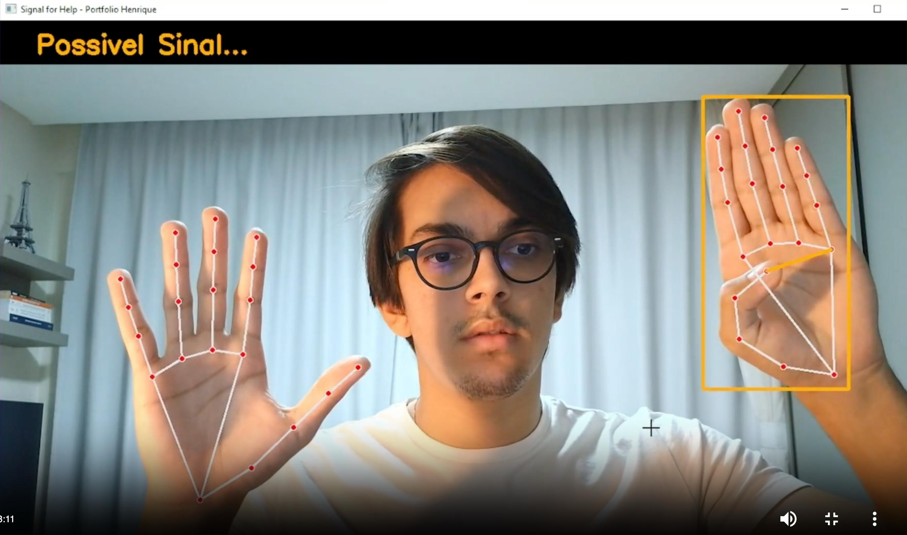

In [00]:
olá, eu sou
Henrique
Targino
Cientista de Dados
Transformo dados em decisões.
→ arraste os pontos do gráfico e veja a reta se reajustar
In [04]:
visão computacionalDetector de Sinal de Socorro
Um sistema que reconhece o gesto universal de pedido de ajuda em tempo real — só com webcam e CPU — e dispara um alerta silencioso via webhook.

// como funciona
O MediaPipe extrai 21 pontos da mão. Em vez de treinar um modelo pesado, o sistema usa geometria pura — a distância euclidiana entre os dedos — dentro de uma máquina de estados (ARMAR → DISPARAR → ALERTA) pra não confundir um aceno com um pedido de socorro.
// o impacto
A repercussão do projeto rendeu um convite pra ministrar uma masterclass de visão computacional na TripleTen. Quando o gesto é confirmado, um POST assíncrono dispara o alerta — em uma thread separada, sem travar o vídeo.
In [05]:
redes neurais · reinforcement learningAI Soccer
Agentes que aprendem a jogar futebol do zero — sem nenhuma regra escrita à mão — em pura tentativa e erro, ao longo de 50 milhões de steps de treino.

// a ideia
Nada de comportamento programado: os agentes começam sabendo nada e aprendem por reforço, jogando milhões de partidas contra si mesmos (self-play) até desenvolverem estratégia.
// por baixo dos panos
A política é uma rede neural treinada com um PPO próprio — escrito do zero, estilo CleanRL, sem bibliotecas de RL prontas — em PyTorch. Ela lê o estado do jogo e decide a ação, milhões de vezes, só na CPU.